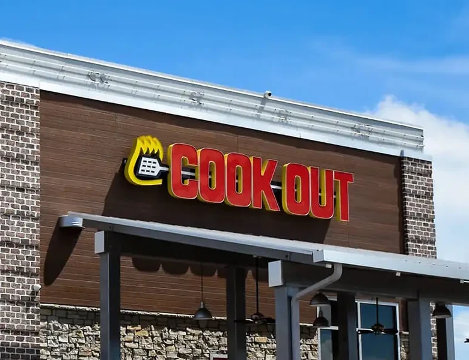

Let's have a Cookout!
November 2nd, 2025
When I think of a fast food place, I think of couple things. Cheap food that is objectively not great for you, but still tastes really good. And of course they're, well, fast. Cookout is the perfect embodiment of all those things. Cheap food that tastes good and will probably cause you health problems if you eat it on a regular basis. And that's ok. Cookout does it's job as a fast food restaurant very well. And if that was all I had to say, I'd probably be giving them a middling to high rating. But anyone who's been to Cookout knows the real reason why you would want to go there. The milkshakes. Cookout milkshakes have got to be hands down the best dessert of any fast food restaurant I've been to. Sure, you can't drink for the first 30 minutes after buying them because of how thick they are, but gosh darn it they are delicious.
Final Ratings:- Food: 4.5/5
- Service: 4/5
- Atmosphere: 4/5
- Pricing: 5/5